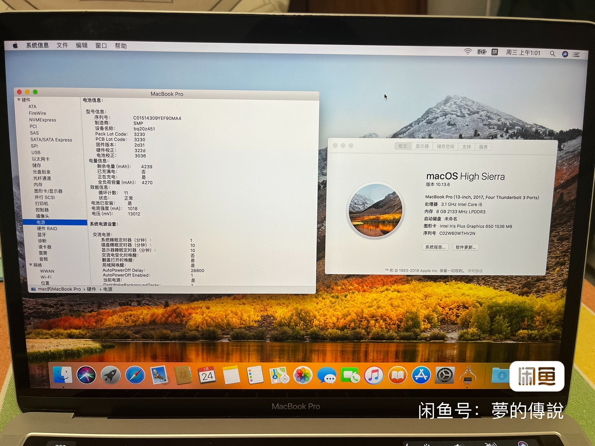
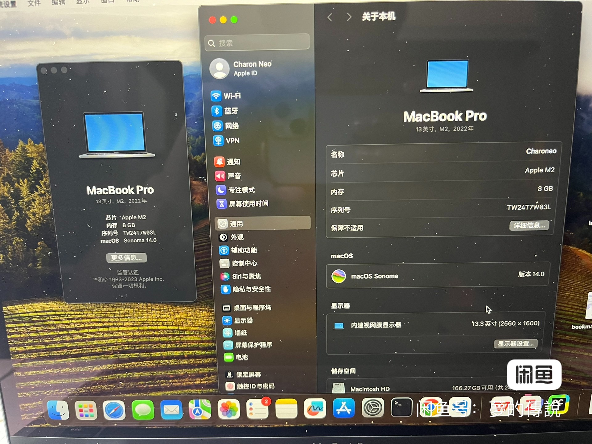
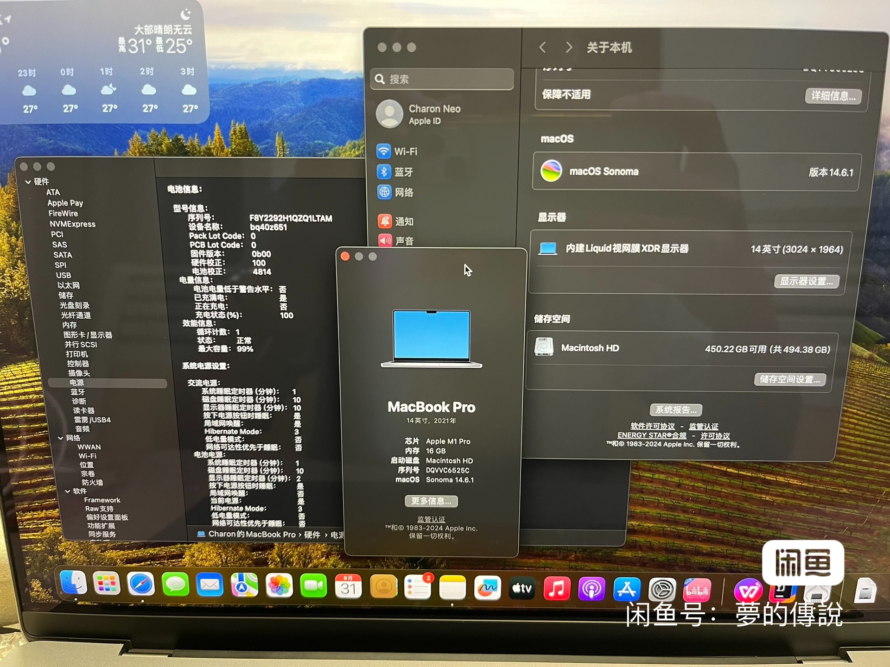

我现在这台mac的型号是2024款最新款14寸macbookpro m4pro 48G+1T，在这之前我更换过多次，从一开始的17款A1706macbookpro，到22款13寸的m2，再到21款的14寸m1pro，再到23款14寸m2max，再到现在我手里这一台，虽然说前四台都是二手的。但是，一款好的二手电脑性价比极高，足足可以用好多年。二手电脑贬值快是不可避免的，mac算作在二手电脑里贬值幅度较小的了，最后一台二手m2max当年官网2.5w+，如今过了一年1.67w，电池14次循环，100%，第二年主要部件在保，外观成色都完美，商家还很负责的把发票补开出来了，个人觉得在闲鱼上买到这样的mac算是比较完美了。但是听说新出的m4pro已经吊打m2max，所以没忍住，换了新款的m4pro😁
再说一下我多次换mac的经验吧。
个人是iphone13，ipad Air5，Apple watch s7，也是想体验一下苹果的生态吧，再就是想摆脱每次出门都要带着重达4kg的游戏本+充电器，满足我随时随地办公的需求，于是考虑入手一款mac。
17款的A1706，当时也没有太多钱，好不容易攒了2k，想着快点体验一下mbp，所以就入手了这款。这款缺点也很明显，都2024年了，还用着7年前的机器，有点寒碜的感觉，20年前的全是intel芯片，功耗大，续航比较差，如果是16寸高配intel插着电在家里用还是可以当作生产力的，但是13寸的拿来出门办公。。说实话，续航还真不一定有我的游戏本（Dell G15 5520）强，况且性能层面它和游戏本的差距也不是一点半点的。于是大概一个月后，我又以原价在闲鱼上卖了出去。
22款13寸m2，这个当时主要是看中了芯片，m2芯片说是在m1的基础上提升了不少，可是现在想想，都是arm架构的，厚度还一样，能提升多少呢？5.6k入手的感觉确实还不错，续航极大的提高，出门一整天都不需要带充电器。但是，用了一段时间后发现，性能却不够用，我的配置是8+256，256还好，我也不需要存一些资料，但是内存8G，甚至网页开多了都会卡，何况苹果m系列的内存是cpu和gpu共用的，也就是说，cpu实际得到的内存比8G少的多，如果是轻办公的话无所谓，但是作为一名码农，这肯定是不达标的。还有一点是，这一款的外观和17款的外观没有任何区别，看网上说有点清库存的意思，毕竟最新的m3已经改变了之前的老旧外观。除此之外，蝶式键盘我也不是很喜欢，哒哒哒哒的响不说还没有一点手感。因此，过了一个月，我又以原价卖了出去。
21款14寸m1pro，入手这一款是看网上测评说m1pro是大于m2，这其实也不难理解，毕竟按照苹果的尿性pro就是比基础款强不少的，放在iphone产品上也能看得出来。并且配置方面我也升级到了16+512。但是，还是不满意，毕竟我的游戏本是32+1T的，怎么说也得升级为32G吧，再者，我自己测试的时候，打开微信，qq，IDEA，Webstorm，网页开了几十个的时候内存还是不够用。我的这款是8+14核的，也就是丐版，心里总觉得有些过不去。这款我是在京东上买的，京东的拍拍二手算是比较正规的二手平台了，但是没盒子没发票，将来想转手都困难。于是，为了尽快卖出，我是8843入手的，以7700的价格一个周之后在闲鱼上卖了出去。
还有一点这里补充一下，从这一款开始，我的mac就不带touchbar了，说实话，我一开始入手A1706的时候，有一个相中点就是touchbar，但是后来越来越感觉鸡肋，除了调节声音和亮度的时候比较丝滑，切换网页或者拉动进度条的时候比较省事，其他再无优点。论高端大气上档次，其实赶不上现在的m2max有品。这也是比较有争议的一点吧，所以苹果也取消了touchbar，22款的13寸m2，无疑是最后一批带m2的产品。
这期间还有个小插曲，我在闲鱼上写了可以走验货宝，一位买家欣然接受，我跟他聊的也很投机，但是到了验货宝的浙江验机中心后，验机中心给我的答复是，屏幕存在明显的老化，当时我就懵了，我的屏幕没有一点的问题，怎么验机中心会检测出问题呢，这里还好我录了封箱视频，里面并没有展现出屏幕有老化的现象，后来我上网查阅了很多资料，才发现，苹果m1pro，m2pro等等系列屏幕两侧都会出现变暗的部分，但是不是很明显，因此我也没注意，这是通病。就是这一点，也让验货中心的sb看出来了，没有经验不说，只是死板的下结论，说得好听一点是负责任，说得不好听那就是形式主义。毕竟拿钱办事，不需要提升自己的技能，这种岗位细细想来也能说的过去。验货宝的这一结论，无意成为了买家到手刀的杀手锏，其实，闲鱼提供验货宝这一服务，是为了防止到手刀，实际上，在闲鱼验完货后买家决定要买之前是可以再次商定价格的，到手刀就这样被转移到这个步骤了，真是妙啊，假如说你不降价，买家就拒绝接受商品，让你付验货费，说货不对板，你一点脾气也没有，啥事没做直接亏100多块，这还不算运费。这种变相的到手刀到底对谁有利，不必多言了。所以，我的商品从原来的7800被砍成7700，很无语。这次交易很不愉快，自己亏了1k多，还被验货宝搞了。现在才明白，为什么贵重的电子产品都是面交。
之后，我在闲鱼上浏览了半个月吧，几乎小学期的大半时间都花在了这上面。比较相中的是m2max 32+1T，至于14寸还是16寸，经常出门的话还是14寸好一点，毕竟16寸可能装在书包里都挺困难。本来我已经买了一个未拆封未激活，卖家那边声称是教育机但是已经过保，买回来发现是后封的，因此又退了。过几天，我联系另一个卖家的时候，他发的序列号竟然和我刚退回去的mac的序列号一模一样，再一看他们的ip都是深圳，我瞬间感觉这机器来路不正。因此，我选择一位好评100%的南京实体店卖家，也是在开学的第一天，买到了自己心意的机器。

之所以买mac的原因归结为一下几点吧
- 续航高，我现在的m2max续航虽然赶不上16寸的，但是1小时的中等强度办公消耗10%的电量已经是笔记本中的天花板的存在了
- 便携性，因为我不怎么在宿舍学习，并且要在不同的教学楼里上课，有时还会去图书馆，所以这一是我着重考虑的一点。
- 洁面优美，干净整洁。这一点我就不得不提一下我的游戏本了，经常在轻办公的时候，风扇就毫无防备的响了，一开始还以为是开了什么软件，后来才发现是系统更新，每次都是呼呼的响完，右下角多出来一个请选择计划重启的时间，真是让人有点哭笑不得。还有就是开机速度，安装和卸载软件的便捷性等等
- 苹果生态。现在手机和mac传文件可以直接用隔空投送了，而不用像之前那样还需要借助微信，微信传的视频还是被压缩的，现在可以轻松的传源文件。
- 系统的稳定性。mac系统还是很稳的，这一点网上有很多的案例，我也不多说了，我的游戏本今年就已经蓝屏过2次了。。。
- 触控板，台前调度，全屏幕切换等等。这些功能属实让我方便也舒适不少，具体的优点不细说了。
- 性能层面。mac插不插充电器，电脑的性能都一样，但是win本（特别是游戏本）就不一样了，不插电开个ppt都会卡。。
可能现在有键盘侠会反驳了，mac软件生态差，不能打游戏。
确实，但是我的专业目前来讲只有一个vivado不能在mac上下载，其他的mac上都有相关的软件，况且我也有我的游戏本，只不过不想背着它来回跑。以后如果有需要跑模型啥的，估计也会有实验室的服务器吧。
至于打游戏，熟悉我的人都知道，从上大学以来，我是没有在电脑上打过游戏的，所以如果你是win的游戏迷的话，还是慎重考虑mac。
除了这两点，还能说得出什么理由呢？欢迎评论区留言。
上面的个人经历也是想给各位一个参考，如果你不知道你买mac的目的，或者不能像我这样罗列出买的理由，那我还是建议不要冲动的买。毕竟，买一个配置相同的mac和win，mac的价格是win的2倍左右。最后说一句，如果你想在闲鱼这样的二手平台买mac，你还是一个小白的话，建议你多搜搜经验贴，或者来咨询我，防止被骗！！
-------------------------------------------------------2024/11/26更新----------------------------------------------------------
还是把上面的m2max给出掉了，原因很简单，11月1日出的新品m4芯片，经过多次比较，我发现CPU方面m4=m3pro=m2max，而m4pro的CPU提升更大，可以媲美m3max，所以毫无疑问，买新不买旧，我以15800的价格出掉了m2max，其实现在的m2max性价比不低，但作为一名电子产品爱好者，想尝尝新，所以即使是亏了1000，还是决定卖新款m4pro，下图为目前的机器配置，使用感受一个字：爽！